Le Journal
Le récit jour après jour, de Nice à la Mer Rouge — anecdotes, coups de cœur et coups de fatigue.
Le Grand Départ
Départ de Nice à 19h10 avec Lufthansa. Escale à Francfort — un peu juste, on a couru dans l'aéroport comme des dératés pour finalement apprendre que le vol avait du retard. Evidemment. On s'assoit, on reprend notre souffle, on attend.
Anecdote fondatrice du voyage : ma copine a commandé un plateau repas pendant que je dormais. Pour elle. Juste elle. Elle regardait droit devant elle en mangeant ses pâtes. Je l'ai découvert au réveil. La haine.
Arrivée au Caire à 3h du matin. Petite particularité : le taxi de l'hôtel nous avait demandé une photo de nous en guise de reconnaissance. Et il nous avait spontanément envoyé la sienne — sans qu'on lui demande rien. Charmant, légèrement flippant, très égyptien. 40 minutes de trajet dans Le Caire désert et klaxonnant quand même. Le patron de l'hôtel nous attend à 3h du mat avec des jus frais et des chocolats. On se couche à 4h30, épuisés, souriants, un peu hagards.

Le Caire s'éveille
Réveil à 11h — on a survécu. Premier repas égyptien : Koshary Abou Tarek, institution locale absolue. 200 LE pour deux. Le koshary, c'est pâtes + riz + lentilles + sauce tomate + oignons frits — le genre de plat qui n'a aucun sens sur le papier et qui est absolument délicieux dans l'assiette. On comprend maintenant pourquoi les pharaons ont duré 3000 ans : ils mangeaient bien.
Métro jusqu'au quartier copte (10 LE — moins cher qu'un café à Nice). On est les seuls touristes du wagon, les seuls Européens à des kilomètres à la ronde. Tout le monde nous observe avec curiosité bienveillante. Le quartier copte est beau, paisible, chargé d'histoire — IVe siècle, synagogue Ben Ezra, musée copte. On est bien. On respire.
Puis vient le souk Khân al-Khalili. Et là, c'est une autre histoire. À peine l'entrée franchie : « Welcome my friend! Where are you from? » — France, on dit. — « PARIS! Ah, magnifique! Come, come, I show you real Egyptian shop, no tourist price! » On entre par politesse. Erreur. On ressort 40 minutes plus tard avec un papyrus qu'on ne voulait pas. Tentative de rejoindre les mosquées à pied : rues sombres, tuk-tuk bizarre qui nous colle. Uber jusqu'à Zamalek. Bar vue sur le Nil, trop cher, migraine. Fin de journée en mode survie.
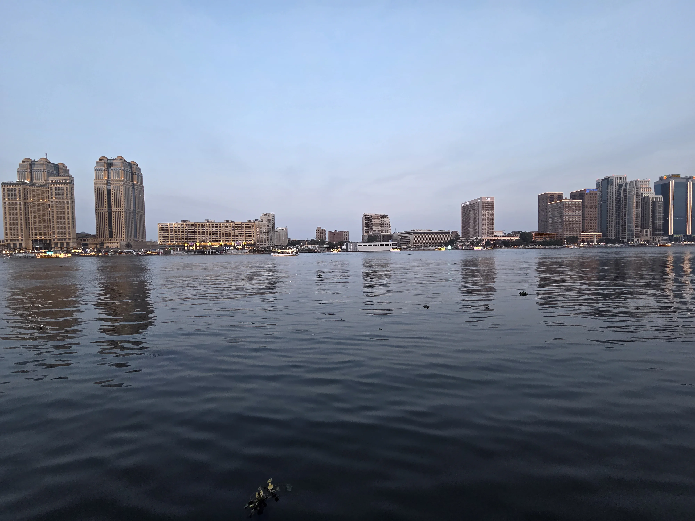
Les Pyramides de Gizeh
9h30, entrée locale des pyramides (700 LE chacun — l'entrée « pour les touristes » coûte le double, on l'a évitée). La Grande Pyramide se dresse devant nous et, pour la première fois du voyage, on se tait vraiment. C'est l'effet pyramide : ça coupe toute envie de commenter. On entre dans la plus petite — couloir très bas, très étroit, 40° à l'intérieur, pas pour les claustrophobes. Fascinant et légèrement traumatisant.
Sur le plateau : j'ai malencontreusement fait tomber un billet. Un Égyptien me le signale immédiatement. Belle humanité. Deux secondes plus tard, dix vendeurs de « souvenirs authentiques » surgissent de nulle part : « Camel ride? Very good price for you! Special today only! » — On dit non. — « Maybe tomorrow? » Descente en chameau jusqu'au Sphinx. Vues magnifiques. Le chameau sent mauvais mais il a un charisme indéniable. Taxi qui nous emmène au mauvais endroit. Décision définitive et irrévocable : plus jamais de taxi, uniquement Uber.
Soirée au Grand Musée Égyptien — billets réservés en ligne (~51€ pour deux, la queue économisée valait de l'or). Architecture époustouflante, Toutankhamon en intégralité, masque d'or à deux mètres de nous. 2h30 de visite et on aurait pu rester 5h. Le Caire violent et bruyant dehors, et là-dedans, le silence des millénaires. Grand écart.
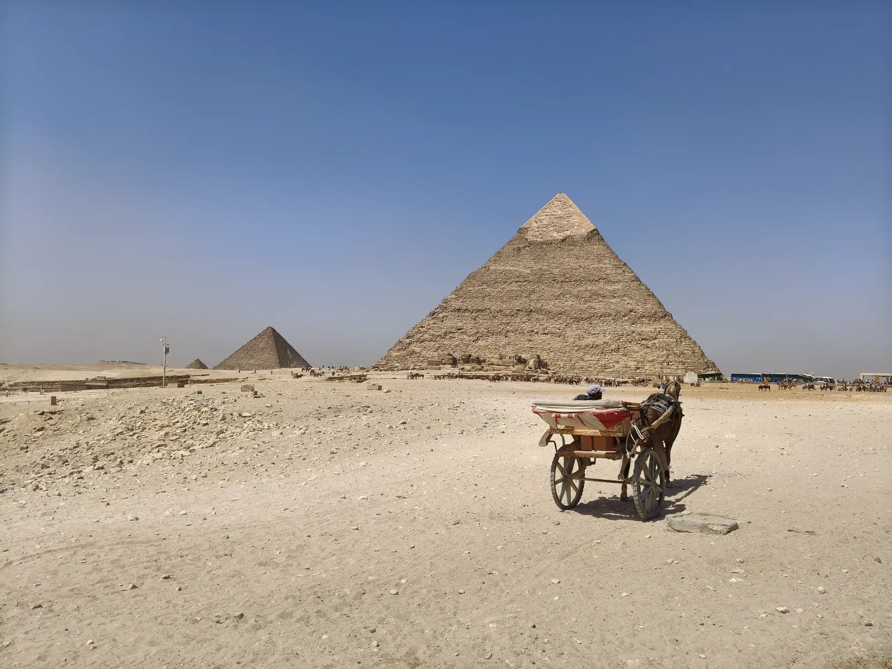
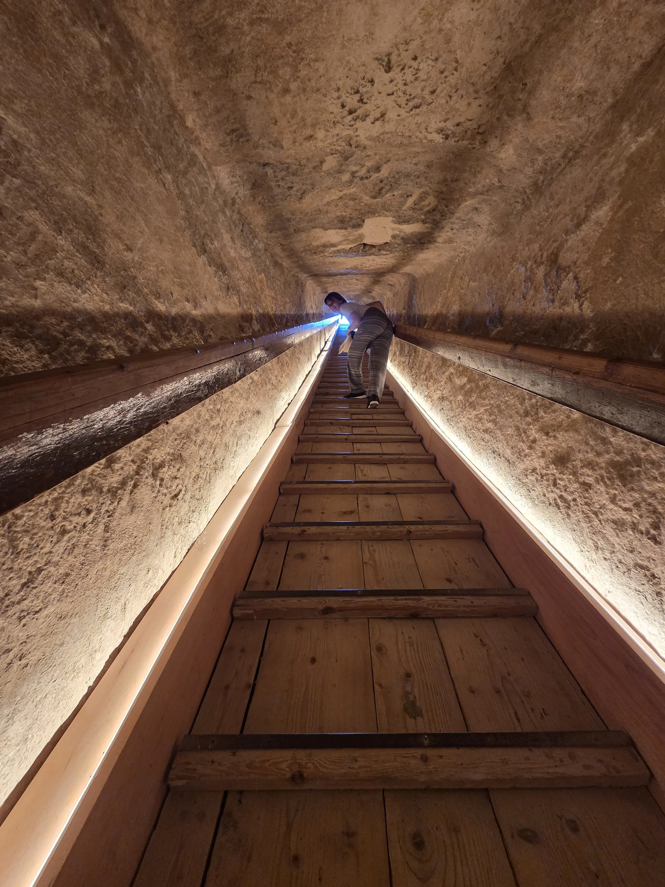
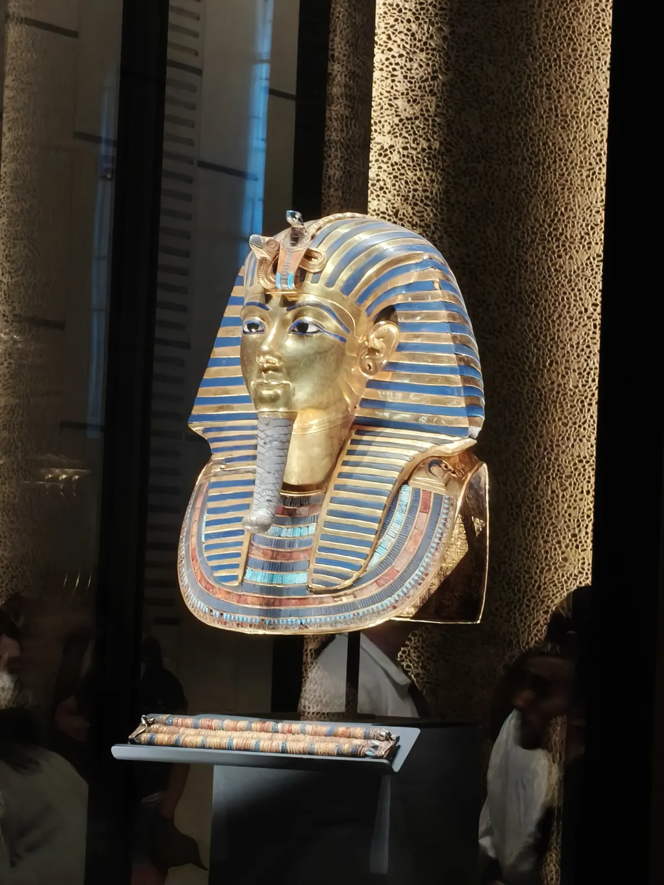
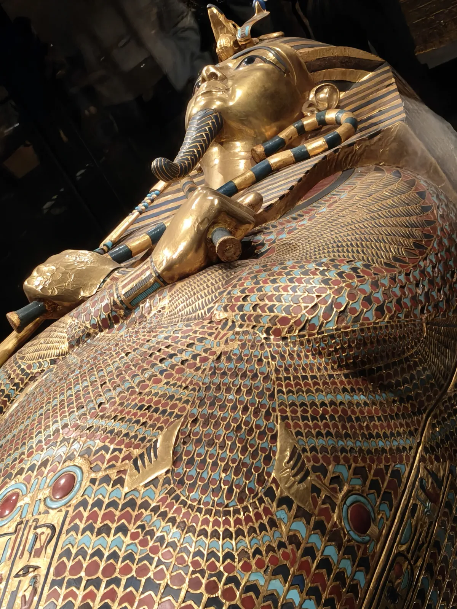


Saqqara, la Révélation
Uber commandé pour Saqqara, 45 km au sud. Le chauffeur accepte 360 LE à l'écran. À l'arrivée, grand moment de théâtre : « Non non, c'était 360 l'aller, le retour c'est 360 de plus, et il faut m'attendre donc c'est 2000 LE total. » Négociation tendue. On finit à 1500 LE. Il attendit. On alla visiter.
Saqqara : coup de cœur absolu du séjour. La pyramide à degrés de Djoser — la plus vieille structure en pierre du monde — est là, dans le désert, sous le soleil. Puis un guide nous emmène seuls dans les tombes des nobles : hiéroglyphes peints encore vifs après 4500 ans, scènes de vie quotidienne, troupeaux de bœufs et pêches au filet. Le silence est total. On entend nos propres respirations. Frissons garantis. Meilleur moment du voyage, sans concurrence.
Retour au Caire. Déjeuner avec vue directe sur les pyramides — l'une des vues de déjeuner les plus absurdes et magnifiques qu'on ait jamais eues. Shopping à Zamalek : j'ai cassé une petite pyramide en vitrine, j'ai donc dû en acheter une. Logique commerçante implacable. Un papyrus avec mon prénom en hiéroglyphes, un livre sur la mythologie. Dîner au Cooq. On dort comme des pierres — ironiquement.

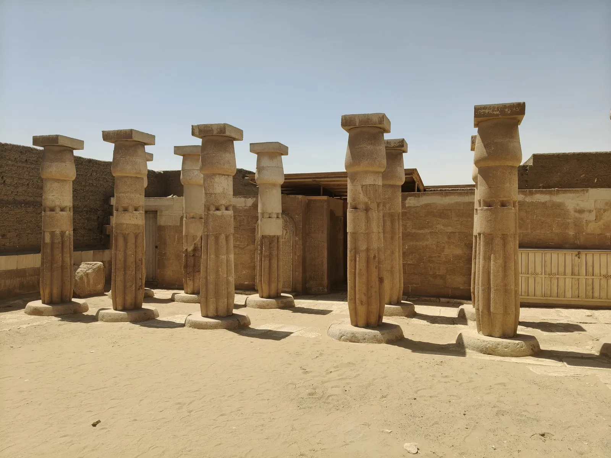
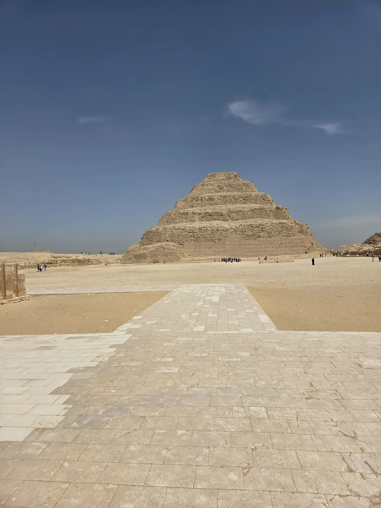
Assouan, la Porte de Nubie
Vol Air Cairo pour Assouan — repas inclus, ce qu'on ne s'attendait pas du tout. Petite victoire. 1h de vol, on atterrit dans le Sud, le vrai, celui où il fait encore plus chaud et où les gens ont des sourires encore plus larges.
Guest house Bacar House : légèrement délabrée, absolument charmante. Le quartier autour ressemble à un décor de film — rues en terre, ânes, échoppes colorées, enfants qui jouent. On pose les sacs. Dîner au restaurant Makini : 700 LE pour deux, cuisine nubienne maison, c'est délicieux.
Souk d'Assouan le soir : incomparablement plus agréable que celui du Caire. On peut flâner sans se faire alpaguer toutes les 10 secondes. Enfin presque — « Take your time! Take your time! » dit le vendeur d'épices en nous tendant une cuillère de curcuma. On prend notre temps. On achète du curcuma. On rentre tôt. Réveil à 3h25 le lendemain.
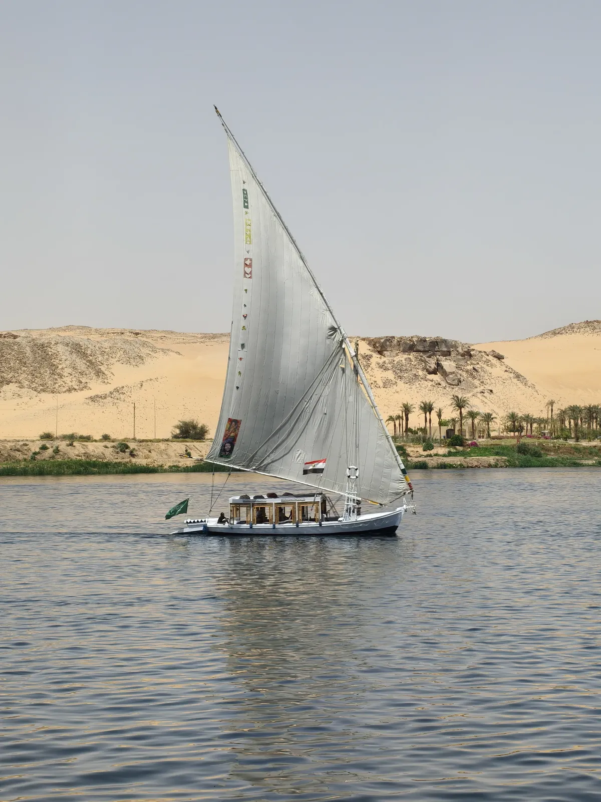

Abou Simbel & l'Île de Philæ
3h25. Le réveil sonne dans le noir absolu d'Assouan. Minibus collectif pour Abou Simbel, 280 km de désert. Retard de 20 minutes. 6–7 passagers ensommeillés. Chauffeur qui double dans les virages sans visibilité. Deux enfants qui vomissent à l'arrière. J'ai dormi, ce qui était clairement la bonne stratégie.
Arrivée à 7h30 à Abou Simbel au lever du soleil. Les quatre colosses de Ramsès II émergent de la falaise dans la lumière du matin. On reste là, muets, 5 minutes. L'intérieur est encore plus stupéfiant — salle hypostyle, scènes de la bataille de Qadesh, sanctuaire avec les quatre dieux. À la sortie : « Photo with camel? Good price! Mister, photo! » — Non merci. — « For your girlfriend? Beautiful photo! » — Toujours non. — « Maybe postcard? » — On file.
Retour 3h de route. Déjeuner Makini (encore — parce que c'est bon). Le soir : île de Philæ, son et lumière sur le temple d'Isis. Le spectacle en lui-même est franchement kitsch — voix off dramatique, lumières colorées, narration qui se prend trop au sérieux. Mais le temple illuminé sur l'eau noire du Nil, dans la nuit du désert, est absolument magique. Puis île Éléphantine avec notre hôte nubien : dîner en rooftop, conversation passionnante sur la politique et l'impossibilité pour les Égyptiens de voyager librement. Rentrée à minuit.
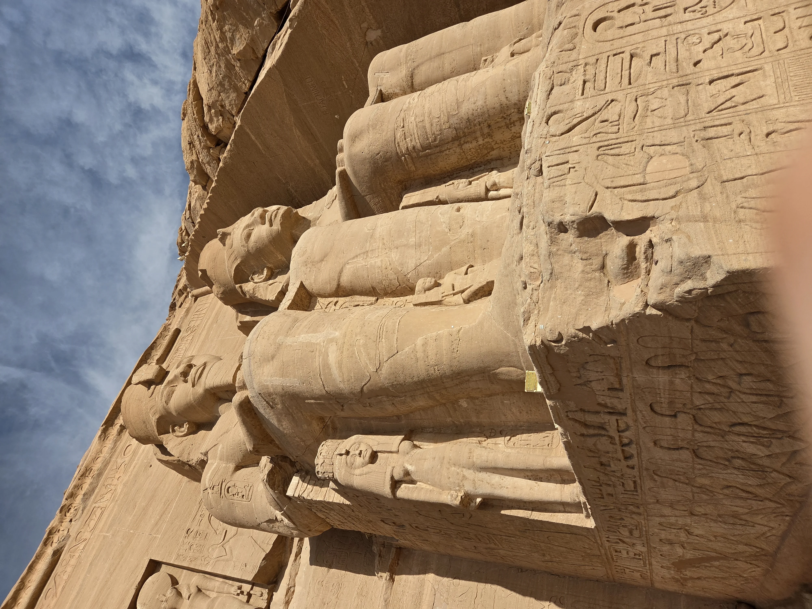
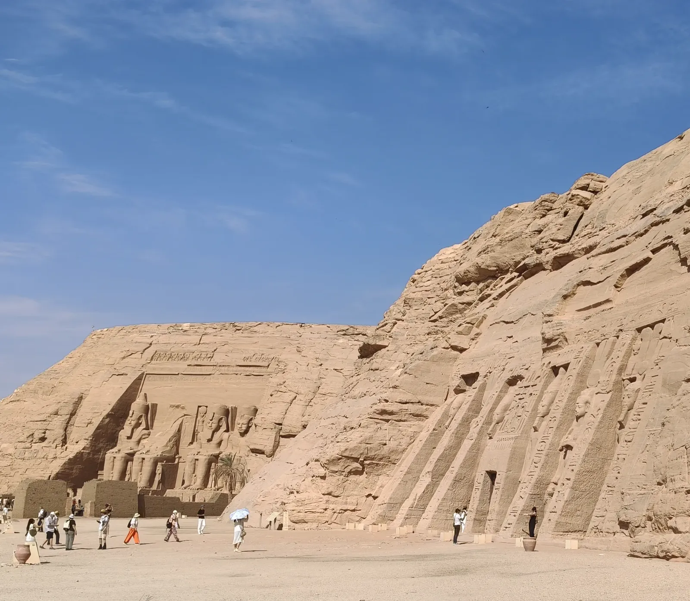
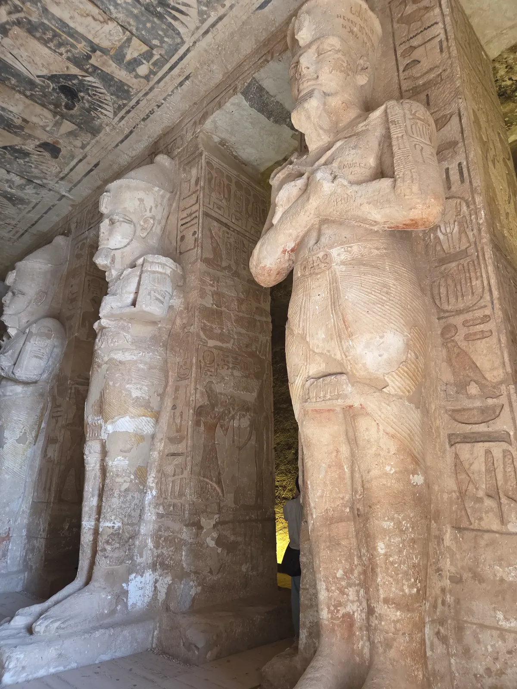

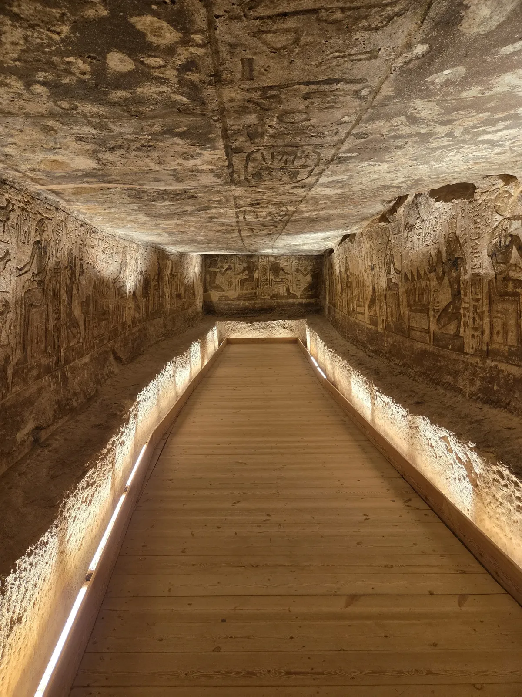

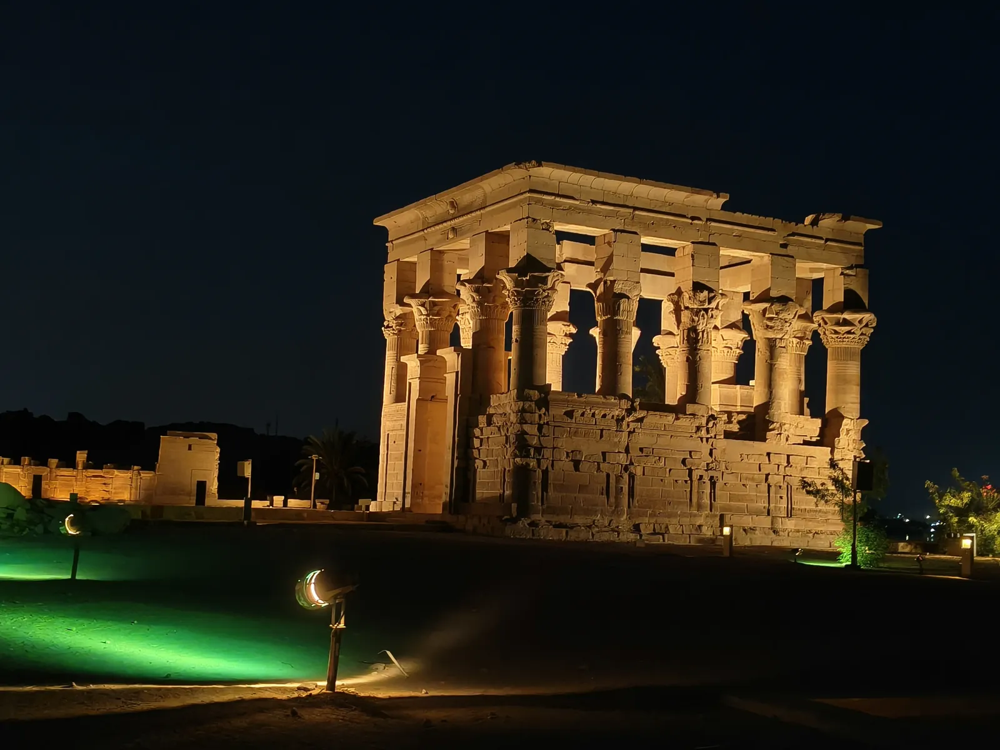
Embarquement sur le Nil
Embarquement sur le bateau de croisière. Cabine avec terrasse privée sur l'eau — presque les pieds dans le Nil. On pose les sacs et on s'installe sur le pont. Le fleuve glisse, les rives verdissent, les palmiers-dattiers défilent. C'est la première fois depuis quatre jours qu'on n'a personne à négocier.
Escale à Kom Ombo : temple du crocodile et d'Horus sous 44°C. À l'entrée du site : « Taxi pour le retour? Bonne prix! » — On est sur un bateau. — « Caleche? » — On est sur un bateau. — « Postcard? » — On avance. Le temple est splendide — double symétrie parfaite, dédiée à deux dieux simultanément. Musée adjacent avec des dizaines de crocodiles momifiés, parés de bijoux. On négocie un chat en céramique de 1500 à 750 LE — talent inexplicable pour ça.
Soirée sur le pont supérieur. Coucher de soleil sur le Nil, le fleuve vire à l'or, un héron cendré s'envole lentement. 29 passagers de tous les pays. Le guide, intelligent et cultivé, parle de politique égyptienne — mais avec des pauses, des demi-phrases, des regards discrets. Comme s'il surveillait quelque chose. On ne pose pas trop de questions.
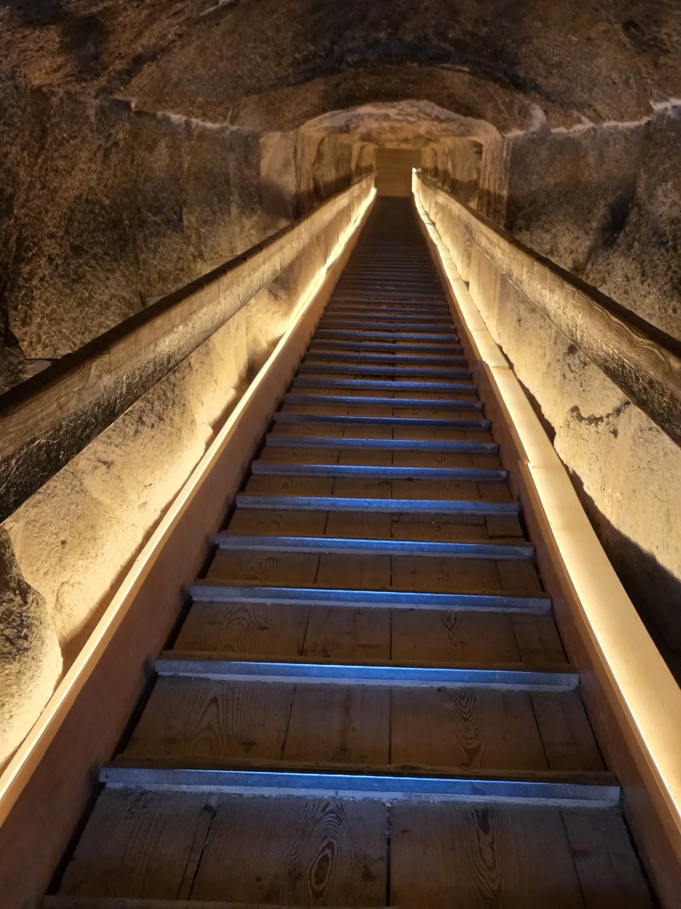
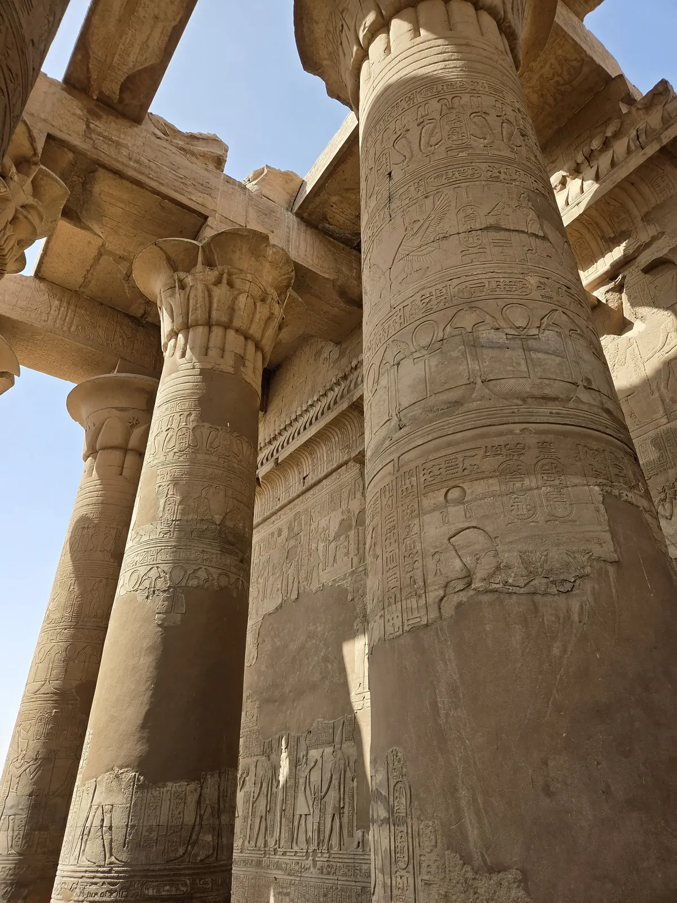

Edfou & les Hiéroglyphes
Arrêt matinal aux carrières de grès de Gebel El-Silsila : c'est d'ici que venaient les matériaux de la plupart des grands temples d'Égypte. On voit encore les marques d'outils dans la pierre, les inscriptions laissées par des ouvriers anonymes. Fascinant et complètement ignoré des touristes — ce qui en fait l'un des meilleurs spots du voyage.
Temple d'Horus à Edfou : le mieux conservé d'Égypte, et probablement du monde antique. Enseveli sous le sable pendant des siècles, ce qui l'a protégé des pillages. Colonnes de 36 mètres, hiéroglyphes sur chaque centimètre carré du sol au plafond. Le guide nous explique la bataille mythologique entre Horus et Seth, gravée intégralement sur les murs. Soudainement, les symboles parlent. C'est une des plus grandes satisfactions intellectuelles du voyage.
Retour sur le pont. Livre, soleil, rives qui défilent, thé à la menthe. Légère tourista en soirée — le fameux « sick boat », maladie officielle de la croisière nilotique. On mange léger. Le Nil, lui, continue de couler, totalement indifférent à nos estomacs.

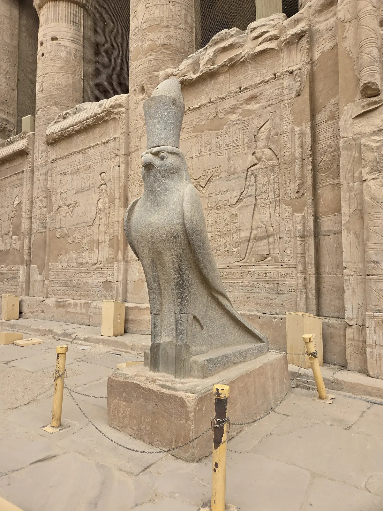
Bienvenue à Louxor
Débarquement à Esna, navette jusqu'à Louxor, traversée du Nil en bac pour la rive Ouest. À chaque étape : « Taxi? Taxi? Mister, taxi! » — on finit par en prendre un pour aller à l'hôtel, et il nous demande le double du prix convenu à l'arrivée. On paie le prix convenu. Discussion animée. On s'en va. Casa Loco Hotel, rive Ouest : charmant, piscine, 27€ la nuit. On plonge immédiatement dans la piscine.
Après-midi : Karnak. Le plus grand complexe religieux du monde antique — 2 km², construit sur 2000 ans par 30 pharaons. Salle hypostyle avec 134 colonnes de 23 mètres. Allée des sphinx criocéphales. Obélisques de 30 mètres. On lève la tête. On la baisse. On la relève. C'est écrasant dans le bon sens du terme.
Retour hôtel. Baignade. Dîner au Wolf (tajine + moussaka). Dans la nuit, on tombe malades tous les deux, simultanément, de façon assez spectaculaire. L'Égypte vient de nous rappeler qu'elle est aussi un pays en développement. Message reçu cinq sur cinq.
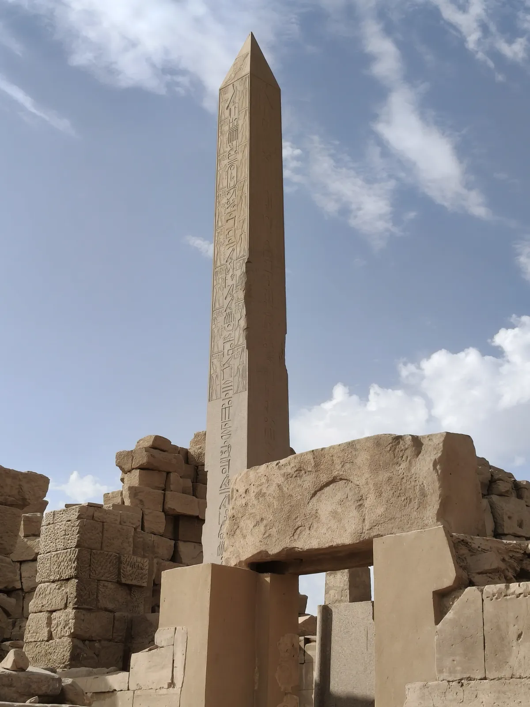
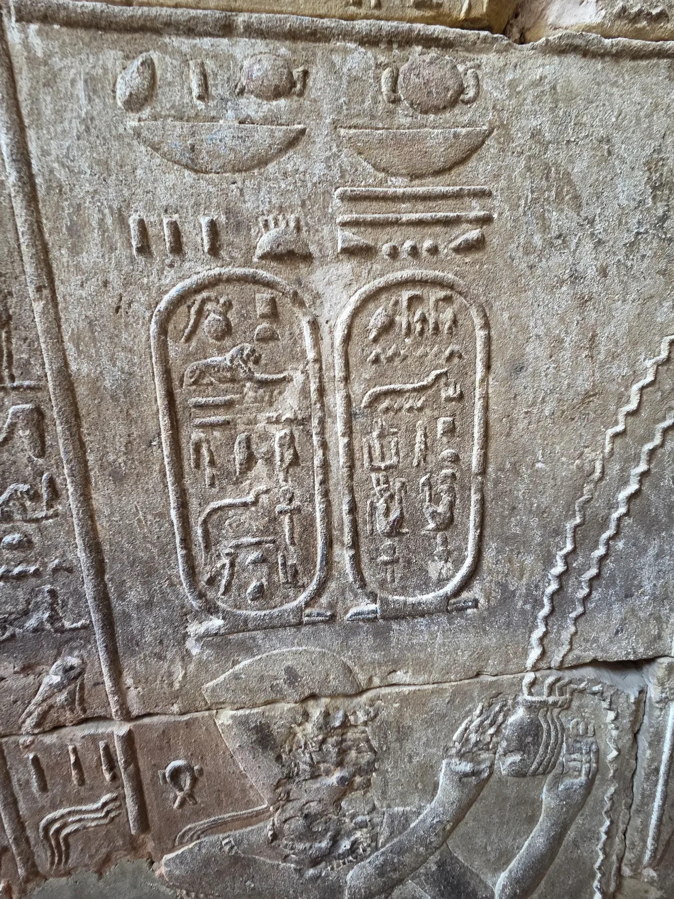
Journée off
Mauvaise nuit. On ne bouge pas. Probiotiques, Smecta, eau, eau, encore eau. Menu de la journée : riz blanc, bananes, quelques frites avalées en tremblant vers 15h. Les pyramides peuvent attendre.
Décision sage et mature : on décale d'une journée, on prend une nuit supplémentaire au Casa Loco (27€ bien investis). La piscine est à 10 mètres — on n'ira pas non plus. On lit. On dort. On regarde le Nil par la fenêtre.
Note philosophique gagnée à la dure : voyager, c'est aussi accepter que son corps décide parfois du programme. L'Égypte, c'est magnifique. Mais son eau du robinet, ses glaçons suspects et ses buffets à 40°C testent en permanence votre système immunitaire. Spoiler : le système immunitaire perd souvent.
Hatchepsout & Louxor de Nuit
Retour à la vie. Taxi de confiance pour la rive Ouest — il s'arrête spontanément acheter des bananes pour nous en chemin. Geste touchant, totalement inattendu. La rive Ouest de Louxor est un chantier archéologique permanent à ciel ouvert : des fouilles partout, des grilles, des panneaux « défense d'entrer », et des choses enfouies dans chaque colline.
Temple d'Hatchepsout, sculpté directement dans la falaise de Deir el-Bahari : trois terrasses colonnées qui montent vers la montagne. De l'extérieur, c'est l'une des architectures les plus élégantes qu'on ait vues. À l'intérieur, sobre et mystérieux. Hatchepsout se représentait avec la barbe cérémonielle masculine — une femme qui régnait comme un pharaon, effacée de l'histoire par son successeur jaloux. On ressort un peu révoltés en son nom.
Soir : temple de Louxor illuminé. On entre dans le souk adjacent — « Where are you from? » demande le premier vendeur. — France. — « Ah, Emmanuel Macron! Bonne nuit Monsieur Macron! Papyrus? » On achète. On rit. On rentre. Tentative de McDonald's local par curiosité malsaine : grosse erreur. On ne recommande pas.

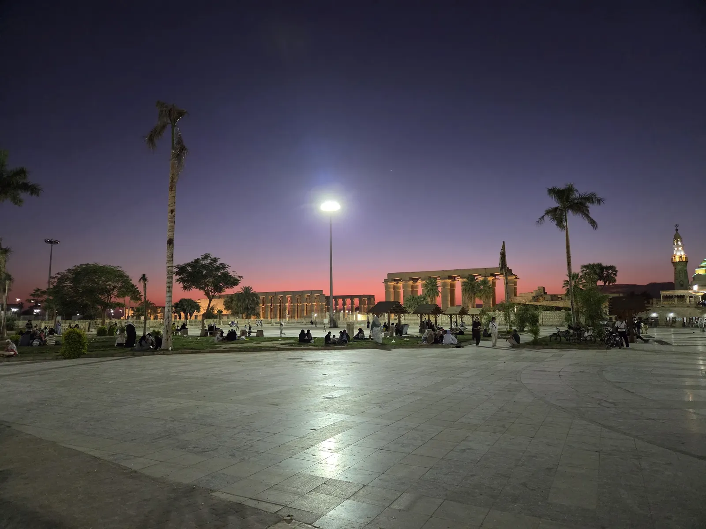
La Vallée des Rois
Dernière matinée à Louxor. Arrêt aux Colosses de Memnon d'abord : deux statues de 18 mètres qui regardent l'horizon depuis 3400 ans, au milieu d'un champ. Entrée gratuite. Zéro vendeur. On prend notre temps. Personne ne dit « good price for you ». C'est reposant.
Vallée des Rois : 63 tombes creusées dans la montagne calcaire pour les pharaons du Nouvel Empire. Le ticket de base = 3 tombes au choix. Sur conseil croisé du taxi local et de ChatGPT (duo inattendu mais efficace) : Ramsès III, Ramsès IV, Mérenptah. Aucun regret. Les couleurs sont stupéfiantes — bleu lapis, rouge ocre, or — après 3000 ans sous la montagne. Ramsès III est époustouflante. On aurait pu rester une semaine entière à Louxor. On en avait 3 jours. C'était trop juste.
14h : taxi vers Somabay, 5h de route vers la Mer Rouge. Chauffeur taciturne qui nous fait baisser les stores à mi-chemin — il évite apparemment un poste de contrôle où les touristes paient une taxe informelle. On ne pose pas de questions. Le désert défile. On arrive épuisés, encore malades, des hiéroglyphes plein les yeux.


Mer Rouge & Repos
Somabay, bord de Mer Rouge. Détente totale. Snorkeling, faune marine généreuse, coraux. Eau à 22–23°C, un peu fraîche mais agréable. Beaucoup de vent un jour.
Au buffet : riz et pâtes (on est toujours en convalescence). Le soleil, le silence, le sable. L'Égypte sait aussi se faire douce.
Et puis il faut rentrer — avec des kilos de photos, des papyrus dans les valises, du sable dans les chaussures, et une certitude : on reviendra.